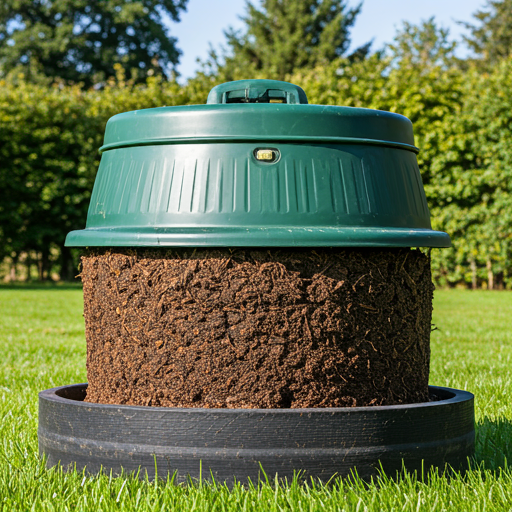

Título de la invención: Un nombre claro y conciso que refleje la innovación. Resumen: Breve descripción de la invención, su propósito y beneficios principales. Antecedentes: Contexto sobre la necesidad de la invención, incluyendo problemas existentes en la producción de abono orgánico y las soluciones actuales. Descripción detallada: Explicación completa del método o producto, incluyendo materiales utilizados, procesos involucrados y sus ventajas sobre soluciones anteriores. Reivindicaciones: Definición precisa y específica de lo que se busca proteger con la patente, resaltando su originalidad. Dibujos o esquemas: Incluir representaciones gráficas que ilustran de manera clara la invención, si es pertinente.
